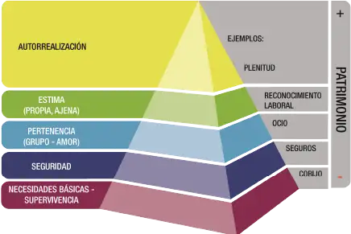
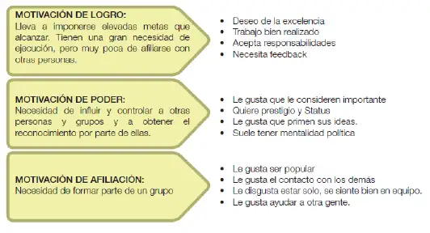

3.0 ¿Qué son los objetivos?
Definición y jerarquía
Los objetivos representan la situación futura que se quiere alcanzar: ¿qué se va a hacer? Se organizan en generales y específicos, como parte de una jerarquía que prioriza acciones. Los objetivos del área se conectan con la estrategia de la compañía y con la cadena de objetivos del negocio.
3.1 Seguimiento de objetivos
Define una frecuencia (semanal/mensual/trimestral) y usa herramientas de control para revisar avances. Si tu empresa no tiene estándar, puedes crear una matriz de indicadores y una carta Gantt.
3.2 Proporcionando claridad (tips para un discurso)
La claridad implica comunicar efectivamente lo que se quiere alcanzar, generando una interpretación compartida y motivación.
3.3 Los 10 consejos clave para un buen discurso
1) Definir el objetivo de la información
Establece qué quieres transmitir pensando en tu público. Define ideas fuerza.
2) Conocer a tu público
¿Cómo entenderán e interpretarán tu mensaje? Considera edad, formación, intereses y temores.
3) Reunir máxima información
Infórmate en profundidad y comprende el tema a cabalidad.
4) Argumentos centrales y secundarios
Jerarquiza los mensajes clave según tu público.
5) Elaborar un relato
Estructura con inicio‑desarrollo‑cierre. Los argumentos dan soporte a la idea fuerza.
6) Usar recursos complementarios
Ejemplos, analogías e imágenes que simplifiquen, no que compliquen.
7) Seleccionar el lenguaje
Adecúalo al público; evita tecnicismos innecesarios y jerga excesiva.
8) No “vender la pomada”
Entrega información honesta. Si pareces vendedor, bajará la credibilidad.
9) Cierre atractivo
Reitera lo fundamental y llama a la acción.
10) Buscar empatía
Conecta con la experiencia del equipo y reconoce su aporte.
3.4 La Motivación
La motivación canaliza la energía hacia metas. Un trabajador motivado obtiene mejores resultados, mayor creatividad e iniciativa.
Pirámide de Maslow
Abraham Maslow propuso cinco niveles: fisiológicas, seguridad, sociales, estima y autorrealización.
{kind=link}
- Nivel 1: Fisiológicas (salario y condiciones mínimas).
- Nivel 2: Seguridad (condiciones seguras, estabilidad, seguridad social).
- Nivel 3: Sociales (compañerismo y relaciones).
- Nivel 4: Estima (reconocimiento, logro, responsabilidad).
- Nivel 5: Autorrealización (desarrollo pleno de habilidades).
Teoría de McClelland
Tres necesidades: Logro, Afiliación y Poder. Las personas orientadas al logro buscan retos alcanzables, mejorar procesos y dominar su actividad.
{kind=link}
3.5 Técnicas de motivación (aplicables)
Selecciona las que aplicarás esta semana y copia tu plan.
3.6 Mini‑quiz (10 preguntas)
3.7 Reflexión (2 líneas)
Nota: se guarda solo en este dispositivo.